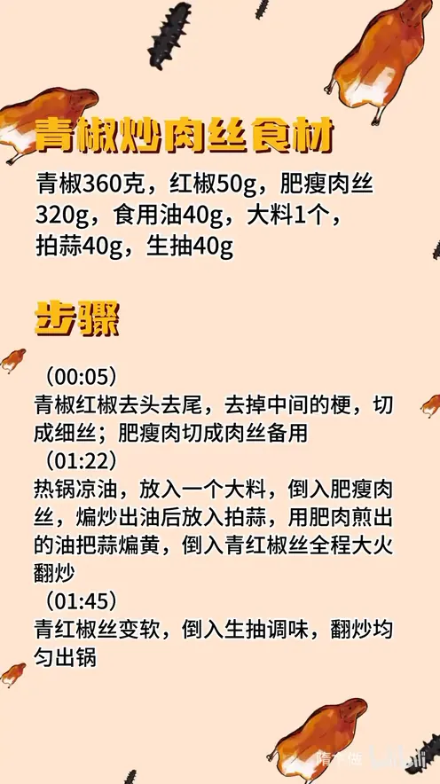

青椒炒肉丝
隋卞一做。360g 青椒配 320g 肥瘦肉丝，青红椒去头去尾、去梗切细丝。热锅凉油先下一颗大料，煸肥瘦肉丝出油，再用这层猪油把 40g 拍蒜煸黄，倒入椒丝全程大火，40g 生抽一浇就出锅。
原视频：https://www.bilibili.com/video/BV1JxDbYjErw
食材
青椒、红椒、肥瘦肉丝 等 7 样
| 类别 | 用料 | 用量 |
|---|---|---|
| 主料 | 青椒 | 360g |
| 主料 | 红椒 | 50g |
| 主料 | 肥瘦肉丝 | 320g |
| 调料 | 食用油 | 40g |
| 调料 | 大料 | 1 个 |
| 调料 | 拍蒜 | 40g |
| 调料 | 生抽 | 40g |
步骤
- 切配：青椒、红椒去头去尾，去掉中间的梗和瓤，切成细丝；肥瘦肉切成肉丝备用。
- 煸肉：热锅凉油，先放入 1 个大料，随即倒入 320g 肥瘦肉丝，煸炒出油。
- 煸蒜：肉丝出油后放入 40g 拍蒜，用肥肉煎出的油把蒜煸黄、煸香。
- 炒椒丝：倒入青红椒丝，全程大火翻炒。
- 调味出锅：青红椒丝变软后倒入 40g 生抽调味，翻炒均匀即可出锅。
小贴士
- 用肥肉煸出的猪油煸蒜，蒜香更足，也不用另外补油。
- 椒丝下锅后全程大火，快炒断生就行，炒久了会出水变软塌。
讲解要点
难度：★★☆☆☆（新手可做，难点是全程大火快炒，青椒炒过就出水塌软）
为什么这么做
- 用柿子椒、不辣：这道菜吃的是青椒的清香和脆，不是辣。
- 去头去尾、去梗：卖相规整；家里吃不想浪费，掰下来的边角拿酱油泡着也很好吃。
- 肥瘦相间的肉丝：煸的时候肥肉出油、瘦肉吸油，最后一个肥而不腻、一个瘦而不柴。
- 热锅凉油先下大料：大料和肉是绝配，一个八角就能把猪肉的香提起来。
- 用煸出的猪油煸蒜：蒜香更足，也不用另外补油。
- 青椒下锅绝不加水：这一步就是让辣椒吸油，吸了油才香；一加水就变成煮青椒，出水又塌。
- 只放酱油：肉和青椒本身味道够，酱油能把两者的香都激发出来；调料不是越用越多，合适就行。
容易翻车
- 中途加水，青椒出水、口感发软。
- 青椒炒过头，颜色发黄、脆劲没了。
- 肉丝切太粗或煸得不够，肥的腻、瘦的柴。
- 酱油下手太重，只剩咸味。
热评补充
- 有观众补充：八角是点睛之笔，和肉绝配；做烧豆腐时加一个八角，也能吃出类似肉的香味。
原片尾卡

原片文案
AI 字幕校准稿
家常菜系列又来了，青椒炒肉丝，特级复制版。柿子椒不辣的。要想卖贵一点的，也得两头去；如果你在家吃、不想浪费，把这掰下来，拿酱油泡也很好吃，不浪费。
肉呢，最好买肥瘦肉。热锅凉油，放一个大料，把肥瘦肉丝倒进去。
在煸炒的过程当中，肥肉出油，然后瘦肉它会吸油，一个肥而不腻，一个瘦而不柴。煸出油了之后，咱们把蒜放进去，把蒜给它煸香。
把青椒丝倒进去。很多人这步会加点水，千万不行啊，这步也是为了让辣椒吸这个油的，它就会特别的香。看有点软了，调味放点酱油，把颜色找够了，这味儿应该就差不多了。定个味儿，刚刚好，出锅，就这么简单。
好吃，我都还没嚼，就是入嘴那一瞬间就能吃出来它好吃。青椒软了，香味出来了一点多余复杂的味道都没有，只有煸过的那个蒜的香、青椒的香，和那个酱油喷过以后的香。非常简单，非常好吃。
咱调料放得很简单，就只放酱油就行了。肉和青椒本身的味道是够的，酱油最大程度把两个食材的香味都激发出来了。厨艺要提高，不是调料越用越多，应该是越用越少，最主要就是合适就行。
大家在家试一下这个家常菜，非常简单，但是非常之好吃。
整理自「隋卞一做」系列视频，仅供个人学习。